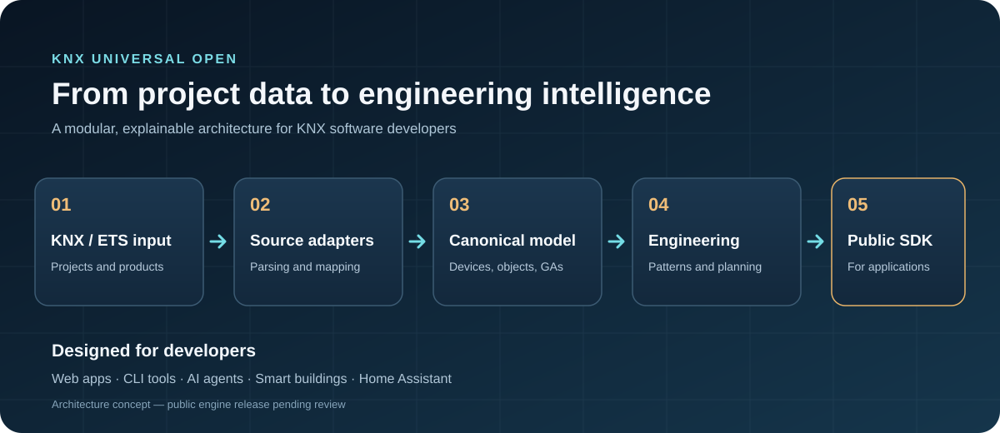

{ KNX }
Project intelligence
Canonical project models for topology, devices, communication objects, group addresses and ETS/KNXPROJ sources.
An open foundation for KNX and ETS engineering tools: structured project models, explainable device intelligence, group address planning and reusable developer interfaces.

Designed for developers building KNX project utilities, automation assistants and smart building integrations. These are the project's intended capabilities, not all currently shipped features.
Canonical project models for topology, devices, communication objects, group addresses and ETS/KNXPROJ sources.
Explainable matching using DPTs, object flags, channel structures and device/function patterns.
Planning and validation of group address assignments, device links and engineering changes.
Headless public interfaces designed to work across tools, runtimes and future integrations.
Deterministic rules, explainable evidence, reproducible tests and explicit unknown states.
Potential CLIs, web tools, AI agents, Home Assistant bridges and community extensions.
Project files and manufacturers are inputs—not assumptions baked into the core. Parsing, models, engineering logic and integrations stay distinct.
Interested in KNX, ETS, smart buildings, TypeScript, device intelligence or automation? Help shape the roadmap, propose integrations, review test cases or contribute code when the public packages become available.